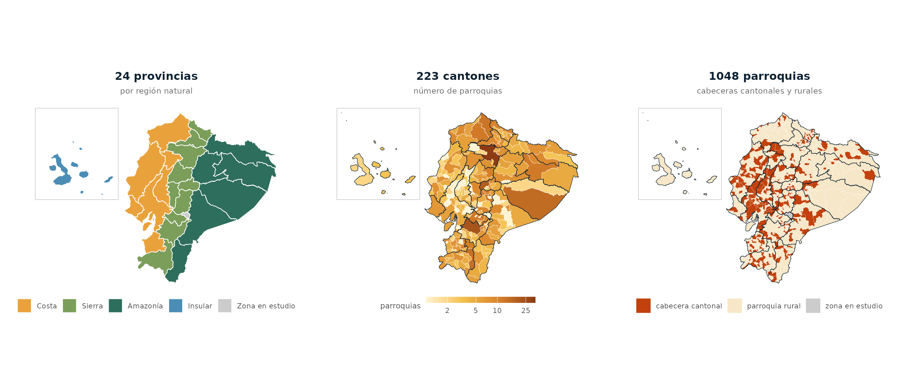

geoecu da acceso en una línea de código a las capas de provincias, cantones y parroquias del Ecuador, con los códigos de la División Político-Administrativa (DPA), listas para mapear y para unir con datos de salud, vigilancia epidemiológica o cualquier otra fuente.
Nota: geoecu es un paquete independiente, desarrollado a título personal. No es un producto oficial de ninguna institución.
- Los tres niveles encajan exactamente: cada cantón es la unión de sus parroquias y cada provincia la unión de sus cantones, sin huecos ni traslapes.
- Dos resoluciones:
"baja"(3 MB, para mapas, boletines y tableros Shiny) y"alta"(para análisis espacial). - Filtros por nombre o código, sin importar tildes ni mayúsculas.
- Une tus tablas por código DPA aunque los códigos vengan de Excel sin ceros a la izquierda.

Instalación
# install.packages("remotes")
remotes::install_github("f-slg/geoecu")La primera vez que pidas una capa, geoecu descarga el GeoPackage correspondiente (unos segundos) y lo guarda en caché. Después funciona sin conexión.
Usuarios de Linux
geoecu depende de sf. En Windows y macOS, CRAN ofrece sf ya compilado y se instala en un minuto. En Linux, CRAN solo publica el código fuente y R lo compila al instalarlo, lo que puede tardar entre 15 y 30 minutos la primera vez.
Para evitar esa espera, instala sf ya compilado desde los repositorios del sistema antes de instalar geoecu:
Si prefieres compilarlo desde R, instala primero las librerías del sistema que necesita:
Uso
library(geoecu)
provincias <- read_provincias()
cantones <- read_cantones(provincia = "Loja")
parroquias <- read_parroquias(canton = "Puyango", area = "rural")
# En UTM 17S para medir áreas o distancias en metros
loja_utm <- read_cantones(provincia = 11, crs = 32717)
# Versión detallada
parroquias_alta <- read_parroquias(provincia = "Loja", resolucion = "alta")
Cada capa es un objeto sf con estas columnas:
| Capa | Columnas |
|---|---|
read_provincias() |
dpa_provin, provincia, area_km2
|
read_cantones() |
dpa_canton, canton, dpa_provin, provincia, area_km2
|
read_parroquias() |
dpa_parroq, parroquia, area_dpa, dpa_canton, canton, dpa_provin, provincia, area_km2
|
Unir tus datos y mapear
geoecu_unir() une una tabla propia con la capa por código DPA. Conserva todos los territorios, así que los que no tienen datos aparecen como NA.
library(ggplot2)
casos <- read.csv("casos_por_canton.csv") # columnas: cod_canton, casos
mapa <- geoecu_unir(casos, codigo = "cod_canton", nivel = "canton")
ggplot(mapa) +
geom_sf(aes(fill = casos), color = "white", linewidth = 0.1) +
theme_void()Mapas nacionales con Galápagos
reubicar_galapagos() traslada las islas a la esquina superior izquierda, junto al continente, y marco_galapagos() devuelve el recuadro para dibujarlo. Funciona con los tres niveles y con capas unidas con geoecu_unir(); si reubicas varias capas, quedan alineadas entre sí.
n_parr <- as.data.frame(table(dpa_canton = dpa$dpa_canton))
names(n_parr)[2] <- "parroquias"
mapa <- geoecu_unir(n_parr, "dpa_canton", "canton", crs = 32717) |>
reubicar_galapagos()
prov <- reubicar_galapagos(read_provincias(crs = 32717))
ggplot() +
geom_sf(data = mapa, aes(fill = parroquias), color = "white", linewidth = 0.1) +
geom_sf(data = prov, fill = NA, color = "#0F2233", linewidth = 0.3) +
geom_sf(data = marco_galapagos(prov), fill = NA, color = "grey78", linewidth = 0.3) +
scale_fill_gradientn(colours = c("#FFF4D2", "#F2C14E", "#D9822B", "#8C3B12"),
trans = "log10") +
theme_void()
El traslado es solo para visualizar: para medir áreas o distancias usa las capas sin reubicar.
Catálogo DPA y utilidades
head(dpa) # 1262 parroquias con sus códigos
buscar_dpa("arenal") # buscar por nombre o código
buscar_dpa("puyango", nivel = "canton")
formatear_codigo(c(701, 1101), "canton") # "0701" "1101"
normalizar_nombre("Cañar ") # "CANAR"Trabajar sin conexión o con archivos propios
geoecu_usar_carpeta("C:/datos/geoecu") # carpeta con geoecu_dpa_baja.gpkgTambién puedes definir GEOECU_CARPETA en tu .Renviron. Para ver o borrar la caché: geoecu_cache_dir() y geoecu_limpiar_cache().
Datos
| Fuente | Cartografía de libre acceso del Geoportal del Instituto Geográfico Militar (IGM) del Ecuador: límites de provincias, cantones y parroquias con códigos DPA. |
| Figuras | Las imágenes de este README se generan con data-raw/03_figuras_readme.R a partir de los datos del paquete. |
| Procesamiento | Cantones y provincias construidos disolviendo las parroquias por código DPA; simplificación topológica con mapshaper (10 m en alta, 250 m en baja); reproyección a WGS84. Scripts en data-raw/. |
| Cobertura | 24 provincias, 221 cantones y 1262 parroquias (440 urbanas, 822 rurales). |
| Sistema de coordenadas | WGS84 (EPSG:4326) por defecto. |
Las parroquias creadas o recodificadas después de la versión de origen no aparecen. Las áreas no delimitadas se asignan según la capa de origen.
Cómo citar
Salas Guerrero, R. F. (2026). geoecu: Capas geográficas de la División
Político-Administrativa del Ecuador. Paquete de R versión 0.1.0.
https://github.com/f-slg/geoecuAl usar los datos, cita también al Instituto Geográfico Militar (IGM) del Ecuador como fuente de las geometrías.
Contribuir
Las preguntas de uso van en Discussions, y los errores y propuestas en issues. Consulta la guía de contribución. Este proyecto sigue un código de conducta: al participar, te comprometes a respetarlo.
Licencia
El código se distribuye bajo licencia MIT.